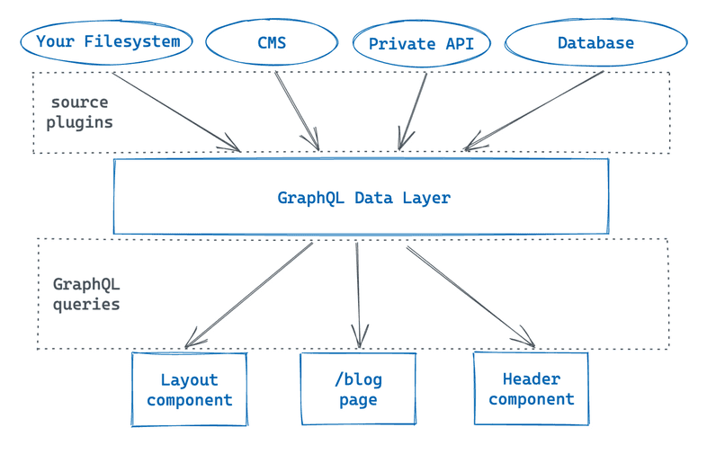

Gatsby
Gatsby is a React-based, open-source framework for creating websites and web applications.
Introduction
Gatsby is a framework rather than a library because it comes with everything included out-of-the-box, including Routing, Data Management, build process, and much more.
- Gatsby is a flexible framework for building headless websites with any CMS, API or database.
- Deploy and host on CDN, delivering content to visitors faster than traditional servers.
- Statically generated sites have less vulnerabilities than traditional websites and platforms.
Gatsby has a unified data layer that enables developer to easily combine data from different sources and render them alongside each other. Add content to your site from Shopify, WordPress, Stripe, and other sources, for example.
Gatsby uses a few technologies under the hood:
- React - A JavaScript library for building user interfaces. React is used to build pages and structure content.
- GraphQL - A query language that allows us to pull data into our website. GraphQL is used by Gatsby for managing site data.
ESLint, Webpack and Babel are automatically configured and setup for our project as part of Gatsby.
Gatsby is built on top of React and combines cutting edge technologies like GraphQL, Webpack and more to create an elegant developer experience.
React is the JavaScript library that Gatsby uses under the hood to create User Interfaces (UI). With React, we can break down our UI into smaller, reusable pieces called components.
Setup the .gitignore file
We will want to exclude some of the project files from being committed to Git. Include these files in the .gitignore file within our project:
// .gitignore
.cache
node_modules
public
Install Gatsby
We need to have Node version 12.13.0 or later to be installed to run Gatsby. The Gatsby CLI (Command Line Interface) tool is a published npm package which means we can install it using npm. To install Gatsby we need to globally install Gatsby CLI version 3 or later.
The Gatsby CLI is a tool that lets us quickly create new Gatsby sites and run commands during development. The npm package is named gatsby-cli.
npm install gatsby-cli -g
Once installed, we can check the version of Gatsby CLI.
npm gatsby --version
Creating a Gatsby site
Once Gatsby CLI has been installed we can use the CLI tool to setup a Gatsby site.
This will start-up the interactive prompt to assist us with creating our Gatsby site. Once the configuration has completed we should have our new Gatsby site. The configuration will generate the folder and allow us to set the name of our application and any further initial settings.
gatsby new
Gatsby Project Structure
It is common to use standard React code organisation patterns such as folders like /components and /utils inside the /src directory.
- /.cache - Automatically generated. This folder is an internal cache created automatically by Gatsby. The files inside this folder are not meant for modification. The /.cache directory should be added to the .gitignore file.
- /plugins - This folder hosts any local plugins that aren't published as an npm package.
- /public - Automatically generated. The output of the build process will be exposed inside this folder. Should be added to the .gitignore file if not added already.
- /src - This directory contains all of the code related to what we will see on the frontend of our site. This is where our source code for the site is located.
- /api - JavaScript and TypeScript files under the src/api become functions automatically with paths based on their file name.
- /pages - Components under src/pages become pages automatically with paths based on their file name.
- /templates - Contains templates for programmatically creating pages.
- html.js - For custom configuration of default .cache/default_html.js.
- /static - If you put a file into the static folder, it will not be processed by Webpack. Instead it will be copied into the public folder untouched.
Here are the files:
- gatsby-browser.js - This file is where Gatsby expects to find any usage of the Gatsby browser APIs (if any). These allow customisation/extension of default Gatsby settings affecting the browser.
- gatsby-config.js - This is the main configuration file for a Gatsby site. This is where you specify information about your site (metadata) like the site title and description, which Gatsby plugins to be included.
- gatsby-node.js - This file is where Gatsby expects to find any usage of the Gatsby node APIs (if any). These allow customisation/extension of default Gatsby settings affecting pieces of the site build process.
- gatsby-ssr-js - This file is where Gatsby expects to find usage of the Gatsby server-side rendering APIs (if any). These allow customisation of default Gatsby settings affecting server-side rendering.
File Structure
Once created, the file structure of our Gatsby site should look like this:
project /
|__node_modules /
|__src /
|__components /
header.js
layout.css
layout.js
seo.js
|__images /
gatsby-astronaut.png
gatsby-icon.png
|__pages /
404.js
index.js
page-2.js
using-ssr.js
using-typescript.tsx
.gitignore
.prettierignore
.prettierrc
gatsby-browser.js
gatsby-config.js
gatsby-node.js
gatsby-ssr.js
LICENCE
package-lock.json
package.json
README.md
src/components/seo.js
/**
* SEO component that queries for data with
* Gatsby's useStaticQuery React hook
*
* See: https://www.gatsbyjs.com/docs/use-static-query/
*/
import * as React from "react"
import PropTypes from "prop-types"
import { Helmet } from "react-helmet"
import { useStaticQuery, graphql } from "gatsby"
function Seo({ description, lang, meta, title }) {
const { site } = useStaticQuery(
graphql`
query {
site {
siteMetadata {
title
description
author
}
}
}
`
)
const metaDescription = description || site.siteMetadata.description
const defaultTitle = site.siteMetadata?.title
return (
<Helmet
htmlAttributes={{
lang,
}}
title={title}
titleTemplate={defaultTitle ? `%s | ${defaultTitle}` : null}
meta={[
{
name: `description`,
content: metaDescription,
},
{
property: `og:title`,
content: title,
},
{
property: `og:description`,
content: metaDescription,
},
{
property: `og:type`,
content: `website`,
},
{
name: `twitter:card`,
content: `summary`,
},
{
name: `twitter:creator`,
content: site.siteMetadata?.author || ``,
},
{
name: `twitter:title`,
content: title,
},
{
name: `twitter:description`,
content: metaDescription,
},
].concat(meta)}
/>
)
}
Seo.defaultProps = {
lang: `en`,
meta: [],
description: ``,
}
Seo.propTypes = {
description: PropTypes.string,
lang: PropTypes.string,
meta: PropTypes.arrayOf(PropTypes.object),
title: PropTypes.string.isRequired,
}
export default Seo
src/components/layout.js
/**
* Layout component that queries for data
* with Gatsby's useStaticQuery component
*
* See: https://www.gatsbyjs.com/docs/use-static-query/
*/
import * as React from "react"
import PropTypes from "prop-types"
import { useStaticQuery, graphql } from "gatsby"
import Header from "./header"
import "./layout.css"
const Layout = ({ children }) => {
const data = useStaticQuery(graphql`
query SiteTitleQuery {
site {
siteMetadata {
title
}
}
}
`)
return (
<>
<Header siteTitle={data.site.siteMetadata?.title || `Title`} />
<div
style={{
margin: `0 auto`,
maxWidth: 960,
padding: `0 1.0875rem 1.45rem`,
}}
>
<main>{children}</main>
<footer
style={{
marginTop: `2rem`,
}}
>
© {new Date().getFullYear()}, Built with
{` `}
<a href="https://www.gatsbyjs.com">Gatsby</a>
</footer>
</div>
</>
)
}
Layout.propTypes = {
children: PropTypes.node.isRequired,
}
export default Layout
src/components/header.js
import * as React from "react"
import PropTypes from "prop-types"
import { Link } from "gatsby"
const Header = ({ siteTitle }) => (
<header
style={{
background: `rebeccapurple`,
marginBottom: `1.45rem`,
}}
>
<div
style={{
margin: `0 auto`,
maxWidth: 960,
padding: `1.45rem 1.0875rem`,
}}
>
<h1 style={{ margin: 0 }}>
<Link
to="/"
style={{
color: `white`,
textDecoration: `none`,
}}
>
{siteTitle}
</Link>
</h1>
</div>
</header>
)
Header.propTypes = {
siteTitle: PropTypes.string,
}
Header.defaultProps = {
siteTitle: ``,
}
export default Header
src/pages/index.js
import * as React from "react"
import { Link } from "gatsby"
import { StaticImage } from "gatsby-plugin-image"
import Layout from "../components/layout"
import Seo from "../components/seo"
const IndexPage = () => (
<Layout>
<Seo title="Home" />
<h1>Hi people</h1>
<p>Welcome to your new Gatsby site.</p>
<p>Now go build something great.</p>
<StaticImage
src="../images/gatsby-astronaut.png"
width={300}
quality={95}
formats={["auto", "webp", "avif"]}
alt="A Gatsby astronaut"
style={{ marginBottom: `1.45rem` }}
/>
<p>
<Link to="/page-2/">Go to page 2</Link> <br />
<Link to="/using-typescript/">Go to "Using TypeScript"</Link> <br />
<Link to="/using-ssr">Go to "Using SSR"</Link> <br />
<Link to="/using-dsg">Go to "Using DSG"</Link>
</p>
</Layout>
)
export default IndexPage
src/pages/page-2.js
import * as React from "react"
import { Link } from "gatsby"
import Layout from "../components/layout"
import Seo from "../components/seo"
const SecondPage = () => (
<Layout>
<Seo title="Page two" />
<h1>Hi from the second page</h1>
<p>Welcome to page 2</p>
<Link to="/">Go back to the homepage</Link>
</Layout>
)
export default SecondPage
src/pages/404.js
import * as React from "react"
import Layout from "../components/layout"
import Seo from "../components/seo"
const NotFoundPage = () => (
<Layout>
<Seo title="404: Not found" />
<h1>404: Not Found</h1>
<p>You just hit a route that doesn't exist... the sadness.</p>
</Layout>
)
export default NotFoundPage
package.json
{
"name": "gatsby-starter-default",
"private": true,
"description": "A simple starter to get up and developing quickly with Gatsby",
"version": "0.1.0",
"author": "Kyle Mathews <mathews.kyle@gmail.com>",
"dependencies": {
"gatsby": "^4.12.1",
"gatsby-plugin-gatsby-cloud": "^4.12.1",
"gatsby-plugin-image": "^2.12.1",
"gatsby-plugin-manifest": "^4.12.1",
"gatsby-plugin-offline": "^5.12.1",
"gatsby-plugin-react-helmet": "^5.12.1",
"gatsby-plugin-sharp": "^4.12.1",
"gatsby-source-filesystem": "^4.12.1",
"gatsby-transformer-sharp": "^4.12.1",
"prop-types": "^15.8.1",
"react": "^17.0.1",
"react-dom": "^17.0.1",
"react-helmet": "^6.1.0"
},
"devDependencies": {
"prettier": "^2.6.2"
},
"keywords": [
"gatsby"
],
"license": "0BSD",
"scripts": {
"build": "gatsby build",
"develop": "gatsby develop",
"format": "prettier --write \"**/*.{js,jsx,ts,tsx,json,md}\"",
"start": "gatsby develop",
"serve": "gatsby serve",
"clean": "gatsby clean",
"test": "echo \"Write tests! -> https://gatsby.dev/unit-testing\" && exit 1"
},
"repository": {
"type": "git",
"url": "https://github.com/gatsbyjs/gatsby-starter-default"
},
"bugs": {
"url": "https://github.com/gatsbyjs/gatsby/issues"
}
}
gatsby-config.js
module.exports = {
siteMetadata: {
title: `Gatsby Default Starter`,
description: `Kick off your next, great Gatsby project with this default starter. This barebones starter ships with the main Gatsby configuration files you might need.`,
author: `@gatsbyjs`,
siteUrl: `https://gatsbystarterdefaultsource.gatsbyjs.io/`,
},
plugins: [
`gatsby-plugin-react-helmet`,
`gatsby-plugin-image`,
{
resolve: `gatsby-source-filesystem`,
options: {
name: `images`,
path: `${__dirname}/src/images`,
},
},
`gatsby-transformer-sharp`,
`gatsby-plugin-sharp`,
{
resolve: `gatsby-plugin-manifest`,
options: {
name: `gatsby-starter-default`,
short_name: `starter`,
start_url: `/`,
background_color: `#663399`,
// This will impact how browsers show your PWA/website
// https://css-tricks.com/meta-theme-color-and-trickery/
// theme_color: `#663399`,
display: `minimal-ui`,
icon: `src/images/gatsby-icon.png`, // This path is relative to the root of the site.
},
},
// this (optional) plugin enables Progressive Web App + Offline functionality
// To learn more, visit: https://gatsby.dev/offline
// `gatsby-plugin-offline`,
],
}
Prettier
Prettier is a code formatter that will help keep our code consistent during development. If not installed, Prettier can be installed using npm.
npm install prettier --save-dev
Once installed, create a .prettierignore file in the root of the project folder.
// .prettierignore
.cache
package.json
package-lock.json
public
Next, create a .prettierrc file, also in the root of the project folder.
// .prettierrc
{
"arrowParens": "avoid",
"semi": false
}
We can choose to extend this file further if we wish.
// .prettierrc
{
"arrowParens": "avoid",
"semi": false,
"tabWidth": 4,
"singleQuote": true
}
Static Folder
You can create a folder named static at the root of your project. Every file you put into that folder will be copied into the public folder. For example, add a file named sun.jpg to the static folder and it'll be copied to public/sun.jpg.
You can reference assets from the static folder in our code without anything special being required.
However, no files in the static folder will be post-processed or minified and missing files will not be called at compilation time, causing a 404 error for our users.
Fonts
Get started by using local fonts and adding them into the src directory, such as src/fonts/fontname.woff2. Some common font file extensions are: .woff2 and .woff
Self-host Google Fonts with Fontsource
Fontsource is a project to provide open-source fonts from Google Fonts as npm packages.
Begin by installing the font from Fontsource required in our Gatsby application as an npm package.
npm install @fontsource/open-sans
The package will be installed as a dependency and listed within the package.json file.
Once the npm package has been installed, import the font package into your app entry file or site component. Usually it's recommended to import the package into the Layout template, although it can also be imported into gatsby-browser.js.
import "@fontsource/open-sans" // Defaults to weight 400 with all styles included.
If we wish to select a particular weight or style, we can specify it by changing the import path. These variations will be listed in each package's README file.
import "@fontsource/open-sans/500.css" // Weight 500 with all styles included.
import "@fontsource/open-sans/900-normal.css" // Select either normal or italic.
Once imported, you can reference the font name in a CSS stylesheet, CSS Module, or CSS-in-JS.
body {
font-family: "Open Sans";
}
By self-hosting fonts, the site's loading time can be greatly reduced.
Running Gatsby
Now that the Gatsby website is setup and installed, we can begin development.
First, we can change into the project directory when the Gatsby site is located from within the terminal and run our Gatsby application locally on the local server.
Gatsby has a development server build-in so we can view the site in our browser locally. After a few moments the command-line should output a message confirming the development server is running.
Open your web browser and navigate to: http://localhost:8000/
npm run develop
To stop the development server running, use CTRL + C.
Pages
All pages within our Gatsby website are located within the src/pages directory inside our project folder. Initially there will be two pages, the homepage as src/index.js, and a 404 page named src/404.js
project /
|__src /
|__pages /
404.js
index.js
Pages in Gatsby are built using React functional components and are referred to as Page Components.
Gatsby automatically creates pages for React components that are the default export of files in the src/pages directory.
If pages are updated or new pages added, the development server will reload and the changes will be visible.
Create Pages
Pages in Gatsby are React components built using JavaScript. To add a new page, create a file named about.js in the src directory. This will be an About us page.
import * as React from 'react';
const AboutPage = () => {
return (
<h1>About us</h1>
)
};
export default AboutPage;
Our newly created About us page can be accessed: http://localhost:8000/about
Links
Gatsby has a built-in component for links. This is a pre-built component that is defined and maintained by the Gatsby package so we can import and use it within our pages and components.
The link component allows us to link to our pages within our Gatsby site. This link component has a prop called to which is similar to the href attribute within HTML link elements. The value within the to prop should be the URL path to the page we want to link to.
External links should use the regular HTML anchor element.
We first need to import the Link component to use it:
import { Link } from 'gatsby';
Once the Link component is imported, we can use it:
<Link to="/">Home</Link>
<Link to="/about">About us</Link>
Plugins
In Gatsby, a plugin is a separate npm package that you install to add extra features to your site. There are a variety of plugins that each have different use cases. Some plugins provide pre-built components, others add analytics, others let you pull data into your site, such as from a CMS (Content Management System) like WordPress or a database.
Gatsby has a Plugin Library that lists all the plugins that can be installed.
We don't always need to use plugins, we could build out the same functionality from scratch ourselves, but plugins save time. We will likely use plugins in almost every Gatsby site we build.
Some Gatsby plugins are built by employees of Gatsby, while others are developed and maintained by community members.
- We install the plugin using npm as each plugin is an npm package.
- The plugin is added to the plugins array inside the gatsby-config.js file.
- We can then use the plugin features in the site, as needed.
We install a Gatsby plugin the same way as we install most npm packages:
npm install plugin-name-here
Installing the plugin will add the plugin as a dependency in your package.json and package-lock.json files. Depending on what plugin is being installed, there may be more dependencies that also need to be installed.
The gatsby-config.js file contains information about the site, including the configuration for plugins. You can add a plugin to the plugins array inside the gatsby-config.js file.
module.exports = {
siteMetadata: {
title: "My First Gatsby Site",
},
plugins: ["plugin-name-here"],
};
Some plugins require extra configuration options. In this case, you'll add an object to the plugins array:
module.exports = {
siteMetadata: {
title: "My First Gatsby Site",
},
plugins: [
{
resolve: "plugin-name",
options: {
// Check the plugin README for what options go in here
}
},
]
};
After you make updates to your gatsby-config.js file, you'll need to restart your gatsby develop process for your changes to be picked up. Now the plugin can be used within your Gatsby site as needed.
Styling
We can apply styling to our Gatsby application in many different ways.
Tailwind CSS
We can install Tailwind CSS and its dependencies as devDependencies using npm.
npm install tailwindcss postcss autoprefixer gatsby-plugin-postcss --save-dev
Once installed, run the init command to generate the tailwind.config.js and postcss.config.js files in the root of our Gatsby project.
npx tailwindcss init -p
In the gatsby-config.js file, add the gatsby-plugin-postcss plugin.
module.exports = {
plugins: [
'gatsby-plugin-postcss',
// ...
],
}
Update the tailwind.config.js file to point to all the paths of our template files:
module.exports = {
content: [
"./src/**/*.{js,jsx,ts,tsx}"
],
theme: {
extend: {},
},
plugins: [],
}
Add a new file named src/styles/global.css inside our project folder to add any global styles we wish to apply to our Gatsby application.
Import this file into the gatsby-browser.js file in the root of our project to apply the global styles.
import './src/styles/global.css'
We can now start using Tailwind CSS inside our Gatsby application.
Images
We can use the gatsby-plugin-image plugin to add responsive images to your site while maintaining high performance scores. The gatbsy-plugin-image plugin exports a component called StaticImage, which we can use to load images from a remote URL or our local filesystem.
Begin by installing the gatsby-plugin-image plugin and its dependencies:
npm install gatsby-plugin-image gatsby-plugin-sharp gatsby-source-filesystem
The StaticImage component requires a few additional plugins to work. These extra plugins are called peer dependencies and need to be installed along with the gatsby-plugin-image package:
- gatsby-plugin-sharp - Handles the actual image processing that is used by gatsby-plugin-image.
- gatsby-source-filesystem - Lets you pull in data from your filesystem.
Next, the gatsby-plugin-image and gatsby-plugin-sharp plugins are added to the gatsby-config.js file.
module.exports = {
siteMetadata: {
title: "My First Gatsby Site",
},
plugins: [
"gatsby-plugin-image",
"gatsby-plugin-sharp",
],
};
Now that the plugins have been installed and configured, we can use the StaticImage component in our Gatsby site. We can use the StaticImage component in a similar way to how we would use the HTML <img> tag.
The StaticImage component expects the following props:
- src (string) - The URL to the image we want to load. This is similar to the src attribute in an HTML <img> tag.
- alt (string) - The alt text used to describe the image.
We can then import the StaticImage component into our React components or pages:
import { StaticImage } from 'gatsby-plugin-image';
Then add images to our pages from an external URL:
<StaticImage
alt="Clifford, a reddish-brown pitbull, posing on a couch and looking stoically at the camera"
src="https://pbs.twimg.com/media/E1oMV3QVgAIr1NT?format=jpg&name=large"
/>
If we want to add an image from our local filesystem using StaticImage.
- Place local images in a directory named src/images.
- Update the src prop in the page to be a relative path to your file instead of an external URL. Update the alt prop if needed.
<StaticImage
alt="Clifford, a reddish-brown pitbull, posing on a couch and looking stoically at the camera"
src="../images/clifford.jpg"
/>
Text and content, such as images, can be added directly into our React components. But often it's easier to create and maintain data somewhere else, like a folder of Markdown files or a Content Management System (CMS), then pull this data into your components as needed. That way, updates to the content can be made without affecting the code for our site.
Layout
Layout components are for sections of your site that you want to share across multiple pages. For example, Gatsby sites will commonly have a layout component with a shared header and footer. Other common things to add to layouts are a sidebar and/or navigation menu.
It is recommended to create your layout components alongside the rest of your components within src/components.
Here's an example of a very basic layout component at src/components/layout.js
import React from 'react';
const Layout = ({ children }) => {
return (
<>
{children}
</>
);
}
export default Layout;
If you want to apply a layout to a page, we need to include the Layout component and wrap our page in it. For example, here is how you would apply your layout to an example page component:
import React from 'react';
import Layout from '../components/layout';
const HomePage = () => {
return (
<Layout>
<h1>I'm in a layout!</h1>
</Layout>
);
}
export default HomePage;
We could then add a header and footer component inside of the layout component that will then be shared across multiple pages. Repeat for every page and template that needs this layout.
SEO
To set the page title in our Gatsby website, we can create a new SEO component within a file named src/components/SEO/index.js.
This file will contain the following code:
import React from "react"
import { Helmet } from "react-helmet"
const Seo = ({ title }) => {
return (
<Helmet
title={title}
/>
)
}
export default Seo
As we can see, we are using the react-helmet package, which has been installed as a dependency within our package.json file.
The react-helmet package can be installed using npm.
This package will manage all of our changes to the document head.
Within a page component, we can then pass in the value to set as the page title.
import React from "react"
import Layout from "../components/Layout/"
import Seo from "../components/SEO/"
const AboutPage = () => (
<Layout>
<Seo title="My website | About" />
<h1>About</h1>
</Layout>
)
export default AboutPage
Environment Variables
Gatsby has built-in support for loading environment variables into the browser and functions. In development, Gatsby will load environment variables from a file named .env.development and for builds, it will load from .env.production
Environment variable files should not be committed to Git as they often contain secret information, such as access tokens or API keys, and are not safe to add to version control. Add .env.* to your .gitignore file and setup environment variables manually.
Within the gatsby-config.js file, add the following code block at the very top of the file:
require("dotenv").config({
path: `.env.${process.env.NODE_ENV}`,
})
Data Layer & GraphQL
Gatsby has a feature called the data layer that allows us to pull data into our site from external sources. The GraphQL data layer is where Gatsby keeps all the data for your site.
The data layer is powered by a technology called GraphQL. GraphQL is a query language with a special syntax that lets us ask for the data you need inside a component.
- Use GraphiQL to explore data in the dta layer and build your own GraphQL queries.
- Use the useStaticQuery hook to pull data into the "building-block" components.
- Use the gatsby-source-filesystem plugin to pull data into your site from our computer's filesystem.
- Create a page query to pull data into a page component.
Source Plugins
By adding a type of plugin to your site called a source plugin, we can get data from its source into the data layer. Each source plugin is designed to communicate with a specific source. When you build your site, each source plugin pulls data from its particular source and adds it to your site's GatsbyQL data layer. A source plugin typically starts with gatsby-source-, such as gatsby-source-filesystem and gatsby-source-contentful.
We use source plugins to connect to the source of data, such as a CMS, API, Database, or anything else so we can then get this data into the data layer.
GraphiQL
Gatsby creates an endpoint that allows us to explore the data layer using an in-browser tool called GraphiQL: http:://localhost:8000/___graphql. We can use this IDE tool to test our GraphQL queries before we add them into our components and explore our site's data and schema.
The Data Layer
All the data we need for our site is kept within the data layer and accessed by Gatsby. Within the data layer we can combine data from multiple sources.
A core feature of Gatsby is its ability to load data from anywhere, CMS, Markdown, other third-party systems, even spreadsheets. This allows teams to manage their content in nearly any backend they prefer.
This data layer lets us pull data into our site from anywhere. For example, keeping your blog posts in WordPress, products in Shopify and user data in Airtable isn't a problem. The data later allows us to combine data from multiple sources letting us choose the best platform for each type of data.
Examples of data:
- Headless CMS, for example: WordPress CMS, ContentStack, or Magnolia.
- Database
- Shopify containing all your products for an eCommerce store.
- Data within Airtable.
- JSON from a payment processor.
- Markdown
Getting Data
Once the data is in the data layer we need to get this data back out. We can write GraphQL queries inside our components to pull out the data we want to use in the site. When we build the site, Gatsby will find all of the GraphQL queries in our components, run them, and put the resulting data in your component.
The process for using GraphQL queries in your components looks slightly different depending on whether it's a page component or a building-block component. To begin, we can pull data into a building-block component to pull the title of our site.
Within the gatsby-config.js file, there's already some information there about your site within the siteMetadata object:
module.exports = {
siteMetadata: {
title: "My First Gatsby Site",
},
plugins: [
// ...
],
};
This data was added to the gatsby-config.js file automatically when we created the Gatsby site. This automatically gets pulled into the GraphQL data layer automatically, so we don't need a source plugin for this.
We can use the useStaticQuery hook to pull the site title into a component. We can only call useStaticQuery once per file.
Headless CMS
A headless CMS is a Content Management System that enables writes and content creators to produce and organise content, while providing developers with structured data that can be displayed using a separate system on the frontend of a website or app.
A headless CMS is a back-end only Content Management System (CMS) that makes content accessible via a RESTful API or GraphQL.
A traditional, monolithic CMS is responsible for both the backend management of content and serving that content to end users. In contrast, a headless CMS is decoupled from frontend concerns which frees the developers to build rich experiences for end users using the best technology available.
Many traditional Content Management Systems (CMS), like WordPress and Drupal, now support a "headless" or "decoupled" mode, which is perfect for Gatsby sites. Through the use of source plugins, Gatsby has support for dozens of headless CMS options, allowing content teams the comfort and familiarity of the preferred admin interface.
Contentful CMS
We can connect Gatsby to a headless CMS like Contentful using source plugins. We will need to first create a Contentful CMS account.
Once logged into the Contentful CMS dashboard:
- Go to Settings then API keys.
- Create an API key.
- Copy the Space ID value that is generated.
- Copy the Content Delivery API - access token.
Next, install the gatsby-source-contentful source plugin. This will be listed in our package.json file once installed.
npm install gatsby-source-contentful
Inside the gatsby-config.js file, add the gatsby-source-contenful source plugin to the plugins array. Replace the values with those generated for the Space ID and Content Delivery API - access token.
module.exports = {
plugins: [
{
resolve: `gatsby-source-contentful`,
options: {
spaceId: `your_space_id`,
accessToken: `your_content_delivery_api_access_token_here`,
},
},
],
}
We may want to use environment variables to protect our API key from Git/version control.
Run the Gatsby build. If successful, the build will connect the the Contentful CMS.
gatsby develop
Open the GraphiQL tool and if connected, we can the make GraphQL queries to the Contentful CMS with contentfulAsset and contentfulEntry.
Dynamic Navigation
We can use the gatbsy-config.js file to dynamically generate the navigation menu within our Gatsby website.
Begin by updating the gatsby-config.js file like so to add the links and URLs we want to use within the menuLinks object:
module.exports = {
siteMetadata: {
title: `Gatsby Default Starter`,
description: `Kick off your next, great Gatsby project with this default starter. This barebones starter ships with the main Gatsby configuration files you might need.`,
author: `@gatsbyjs`,
siteUrl: `https://gatsbystarterdefaultsource.gatsbyjs.io/`,
menuLinks: [
{
name: 'home',
link: '/',
},
{
name: 'about',
link: '/about',
},
{
name: 'contact',
link: '/contact',
},
],
},
plugins: [ ]
}
}
Remember to restart the development server for these changes to be implemented.
This should now be passed into the GraphQL data layer. Within the GraphiQL tool we can test the query to ensure the links are being passed into the data layer.
query MyQuery {
site {
siteMetadata {
menuLinks {
name
link
}
}
}
}
Within the <Layout /> component, we can add import useStaticQuery hook and graphql from Gatsby into our component and add the query to get the data into the component to render.
import React from "react"
import { useStaticQuery, graphql } from "gatsby"
import Header from "../../components/Header/"
import Footer from "../../components/Footer/"
const Layout = ({ children }) => {
// This is the StaticQuery to get the menuLinks data from gatsby-config.js using GraphQL
const { site } = useStaticQuery(
graphql`
query {
site {
siteMetadata {
menuLinks {
name
link
}
}
}
}
`
)
return (
<>
<Header />
<main role="main">
{children}
</main>
<Footer />
)
}
export default Layout
In this component, add a prop called menuLinks to the <Header /> component in the <Layout /> component.
<Header menuLinks={site.siteMetadata.menuLinks} />
Here, we are passing all the menuLinks data into the Header using the prop.
Inside the <Header /> component itself, update the component to use this data from the prop and loop over this data to generate the links for each of the menuLinks added to the gatsby-config.js file dynamically.
import React from "react"
import { Link } from "gatsby"
const Header = ({ menuLinks }) => (
<header>
<nav>
<ul>
{menuLinks.map(link => (
<li key={link.name}>
<Link to={link.link}>{link.name}</Link>
</li>
))}
</ul>
</nav>
</header>
)
export default Header
The navigation within the Gatsby site should dynamically generate from the gatsby-config.js file.
Testing
To preserve code quality over time, you may want to add testing to your Gatsby site using tools such as Jest, for unit tests, react-testing-library for React component tests, and end-to-end tests using Cypress.
The most popular testing framework for React is Jest. While Jest is a general-purpose JavaScript unit testing framework, it has lots of features that make it work particularly well with React.
Unit testing is a great way to protect against errors in your code before you deploy it. While Gabsy does not include support for unit testing out of the box, it only takes a few steps to get up and running. There are a few features of the Gatsby build process that means the standard Jest setup doesn't quite work.
Production
Once development is completed on our Gatsby website we can create a production build. To create a production build, stop the development server and execute the following command in the terminal:
npm run build
This will create the production build of our site and will output the static files into the public directory.